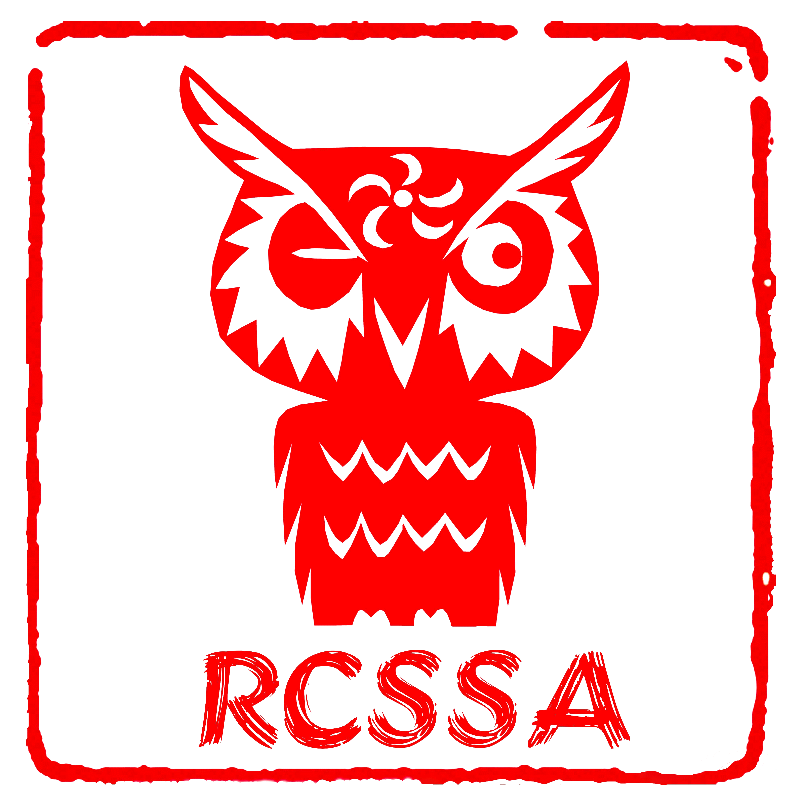

<section id="intro">
  <div class="container">
    <div class="padding"></div>
    <div class="row">
      <div class="col-md-8">
        <h4 class="about-description">
          莱斯大学中国学生学者联谊会（Rice Chinese Students and Scholars
          Association）是在莱斯大学正式注册的非政治、非宗教、非营利、服务性综合性社团组织。
        </h4>
        <h4 class="about-description" style="margin-top: 50px">
          自成立以来，RCSSA
          为莱斯大学中国学生学者提供了生活、学习和职业规划上的帮助，组织了丰富多彩的娱乐活动。对外
          RCSSA 则积极参与各项校内校外交流活动，弘扬中国文化。
        </h4>
        <h4 class="about-description" style="margin-top: 50px">
          莱斯大学的中国学生学者现有（？）八百余人，占学校总人口的10%以上，是学校最大的国际学生学者团体。
        </h4>
      </div>
      <div class="col-md-4">
        
      </div>
    </div>
  </div>
</section>
